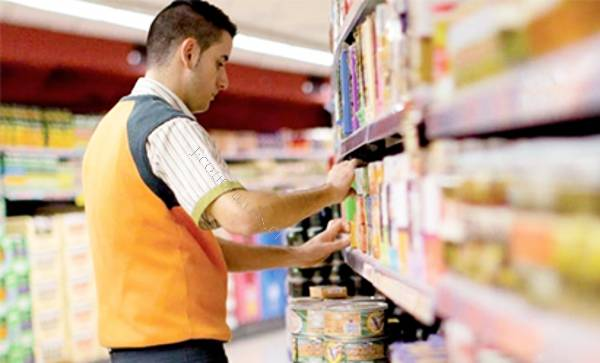

Mi experiencia laboral

REPRESENTANTE DE SERVICIOS ÁREA DE SALA EN SPSA
"Encargado exhibir y revisar mercadería en el área de sala de venta para brindar el mejor servicio a los clientes."

SUPERVISOR DE ALMACÉN Y RECEPCIÓN EN SPSA
"Dirigir y organizar un equipo de trabajo, para la correcta recepción, ingreso al sistema y almacenamiento de productos."

FUTURO INGENIERO DE SISTEMAS - UNC
"Actualmente me encuentro en el noveno ciclo de la carrera profesional de ingenieria de sistemas en la UNC."